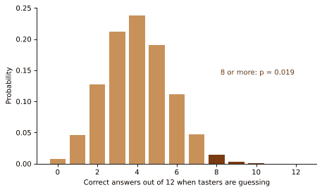

What is in the cup, how do we perceive it, and how reliably can we measure perception?
After this chapter you can
Prerequisites: Chapter 0; Appendix A, Section A.5 (acids and pH); Appendix E, Sections E.2 to E.4 (binomial distribution, comparing means).
A roaster gives you two cups of the same coffee, brewed with two different waters, and asks whether they taste different. You taste them and think one is brighter. When you taste again, you are less sure. Is there a difference? If there is, what is it, and what substance in the cup is responsible?
Answering requires three kinds of knowledge, and this chapter supplies each in turn. The first is how human perception works, since the taster is the instrument. The second is how to design a tasting so that its result means something, which is a problem in statistics. The third is what the cup contains, so that a perceived difference can be traced to chemistry. The later chapters of the book follow those substances back through brewing and roasting.
What we call the flavour of coffee is assembled in the brain from three separate senses. Knowing which sense carries which part of the experience tells us where to look for its cause.
Taste. On the tongue and palate, taste receptor cells carry protein receptors, molecules that bind particular substances and send a signal when they do. Five taste qualities are well established:
| Quality | Receptor | Example in coffee |
|---|---|---|
| Sweet | a pair of proteins, T1R2 and T1R3 | sugars (present only in traces) |
| Umami | T1R1 with T1R3 | glutamate (minor) |
| Bitter | a family of about 25 proteins called TAS2Rs | caffeine, chlorogenic acid breakdown products |
| Sour | a channel, OTOP1, that lets hydrogen ions into the cell | organic acids |
| Salty | sodium channels and other routes | minerals (minor) |
Smell. Several hundred kinds of olfactory receptors in the upper nasal cavity respond to volatile compounds, substances that evaporate readily enough to travel through air. Volatiles reach the nose by two routes. Sniffing the cup carries them in through the nostrils (orthonasal smell). Drinking carries them from the back of the mouth up into the nasal cavity as you swallow and breathe out (retronasal smell). Almost all the descriptors that distinguish one coffee from another, from blueberry to toasted bread, are retronasal aroma. Pinch your nose while sipping and those notes disappear, while sourness and bitterness remain.
Touch. Nerves in the mouth detect temperature, thickness, particles and the drying, puckering sensation called astringency. These sensations make up mouthfeel, which coffee tasters call body.
The brain combines the three inputs and refers them all to the mouth. That is why retronasal aroma is usually reported as "taste", and why the senses interact: an aroma learned as sweet can raise rated sweetness, and bitterness can suppress perceived sourness.
Chapter 0 described any instrument by its detection limit, resolution, drift and bias. A taster has all four, and each can be measured.
The detection threshold is the lowest concentration at which a substance can be told apart from a blank. The recognition threshold, usually higher, is the concentration at which its quality can be named. A standard way to measure the detection threshold is the ascending forced-choice method (ASTM E679). At each concentration the taster receives three cups, one spiked and two blank, and must pick the spiked one. Concentrations rise in steps, usually doubling. The best-estimate threshold is the geometric mean of the last concentration missed and the first concentration from which every answer is correct:
| BET = √(cmiss chit) | (1.1) |
| where | BET | best-estimate threshold (same unit as c) |
| cmiss | highest concentration answered wrongly (e.g. g/L) | |
| chit | lowest concentration answered correctly from then on (e.g. g/L) |
The geometric mean is used because concentrations rise by constant factors, so the midpoint on a logarithmic scale is the natural estimate.
Worked example: A threshold estimate
Problem. A taster misses citric acid at 0.10 g/L and identifies it correctly at 0.20, 0.40 and 0.80 g/L. Estimate the detection threshold.
Plan. Apply Equation 1.1 to the last miss and the first sustained hit.
Solution. BET = √(0.10 × 0.20) = 0.14 g/L.
Check. The estimate lies between the two concentrations, closer to the lower in absolute terms but exactly halfway on a logarithmic scale.
Thresholds differ between people by factors of four or more and are spread roughly evenly on a logarithmic scale. A group threshold is therefore the geometric mean of individual thresholds.
To describe how strong an attribute is, tasters rate intensity on a line or a scale numbered from 0 to 15. Untrained people use scales differently: one taster's 5 is another's 9. Trained panels therefore anchor the scale with reference standards, physical samples assigned fixed values, for example a citric acid solution of stated strength as sourness 5. Even after training, tasters keep some personal offset, which is why experiments in which every taster scores every sample are more powerful (Appendix E.3).
Five biases distort judgements. Expectation: knowing which cup is which changes the score. The halo effect: one strong attribute raises the scores of others. Contrast: a cup tasted after a very sour cup seems less sour. Position: tasters favour the first or middle sample. Adaptation: sensitivity falls with repeated exposure. The standard controls are to code cups with random three-digit numbers, to randomise and balance the serving order, to rinse and rest between samples, and to serve every sample at the same temperature.
We return to the opening question: do the two cups differ? A discrimination test answers exactly that and nothing more.
| Test | Task | Probability of a correct guess |
|---|---|---|
| Triangle (ISO 4120) | Three cups, two alike: pick the odd one | 1/3 |
| Duo-trio | A reference cup and two test cups: pick the test cup that matches the reference | 1/2 |
| Two-alternative forced choice (2-AFC) | Two cups: pick the one with more of a named attribute | 1/2 |
| Tetrad | Four cups, two of each sample: sort them into two pairs | 1/3 |
The triangle test is the most widely used. Suppose twelve tasters each do one triangle test and eight pick the odd cup. Is that evidence of a difference?
The analysis starts from a null hypothesis, the assumption that there is no perceptible difference, so that every taster is guessing with a probability of 1/3 of being right. Under that assumption the number of correct answers follows the binomial distribution (Appendix E.2). The p-value is the probability, computed under the null hypothesis, of getting a result at least as extreme as the one observed. If it is small, conventionally below 0.05, we reject the null hypothesis and conclude that the samples differ. Figure 1.1 shows the distribution for twelve trials.

Figure 1.1. Number of correct answers out of 12 triangle tests when every taster guesses. The shaded bars, 8 or more, together have probability 0.019: rarely produced by guessing alone.
The probability of eight or more correct answers by guessing is 0.019, so eight of twelve is significant. Seven of twelve would give 0.066, not significant. Six of twelve feels convincing but happens by luck 18% of the time.
A significant result says only that some tasters perceived a difference. How many? If a fraction pd of the population can genuinely tell the samples apart, those people always answer correctly and the rest guess. The proportion of discriminators, pd, is linked to the proportion of correct answers, pc, by
| pc = 1/3 + (2/3) pd | (1.2) |
| where | pc | probability of a correct answer (fraction) |
| pd | proportion of the population who perceive the difference (fraction) |
Eight correct of twelve gives pc = 0.667 and, rearranging Equation 1.2, pd = (3pc − 1)/2 = 0.50, with wide uncertainty at this sample size.
A test that finds no difference is only informative if it could have found one. The statistical power of a test is the probability that it detects a difference of a stated size. With the triangle test, the size is naturally expressed as pd.
Worked example: Planning a triangle test
Problem. How many triangle trials are needed to detect pd = 0.30 with 80% power, testing at the 0.05 level?
Plan. If pd = 0.30, Equation 1.2 gives pc = 1/3 + (2/3)(0.30) = 0.533. For each candidate number of trials n, find the smallest number of correct answers that would be significant under guessing (p = 1/3), then compute the probability of reaching it when p = 0.533. Increase n until that probability reaches 0.80.
Solution. With 24 trials, 13 correct are needed and the probability of reaching 13 when p = 0.533 is only 0.55. The first n that reaches 0.80 is 40 trials, needing 19 correct.
Check. More trials are needed than most cafés would run. A café-scale test of 6 to 12 trials can detect only large differences.
The tetrad and 2-AFC tests detect the same sensory difference with fewer trials than the triangle, because the taster's decision wastes less information. The 2-AFC requires naming the attribute in advance, so it suits a question such as "is cup A more sour?" but not "do they differ at all?". A method-independent measure of the size of a sensory difference, called d', is introduced in Appendix E.7.
Common misconception
"We ran a triangle test with six staff and found no difference, so the two grinders are equivalent." With six trials, five correct are needed for significance, and if 30% of people could perceive the difference the chance of five or more correct is about 0.14. Such a test usually misses a real difference. Failure to find a difference is evidence of equivalence only when the test had high power for the smallest difference that matters.
Discrimination tests ask whether samples differ. Two other kinds of test ask how. Descriptive analysis asks which attributes are present and how strong they are. Affective tests ask how much a person likes the result. A trained panel can agree that a coffee is intensely acidic and still disagree on whether the acidity is good, so the two questions should be kept apart.
In 2024 the Specialty Coffee Association adopted a new cupping standard, the Coffee Value Assessment (CVA), in three documents [1]:
The previous SCAA form (2004) gave each attribute one score that mixed intensity and quality, so a high acidity score could mean either "very acidic" or "pleasantly acidic". Separating the two follows standard practice in sensory science: trained cuppers should agree on description, while preferences are expected to differ. The SCA's Q Grader programme, which certifies cuppers, now also includes physical assessment of green coffee and extrinsic information such as origin and processing [2].
Descriptive profiling outside coffee cupping follows ISO 13299, and panellists are selected and trained under ISO 8586 [3]. Panel data are analysed by analysis of variance (ANOVA, Appendix E.4) with panellist and sample as factors. If panellists rank the samples differently from one another, the analysis shows it as a panellist-by-sample interaction, and the panel needs recalibration.
Descriptive analysis needs words that mean the same thing to every taster. A sensory lexicon provides them: a list of attributes, each with a written definition, a physical reference sample and an intensity anchor. The World Coffee Research lexicon was developed by trained panels at Kansas State University and UC Davis.
The SCA and WCR Coffee Taster's Flavor Wheel (2016) was built from that lexicon by a statistical method [4]. Panellists sorted the lexicon's attributes into groups of similar items. Counting how often each pair of attributes was grouped together gave a measure of similarity, and hierarchical clustering, a method that repeatedly merges the most similar items into groups, produced a tree. The branches of that tree became the tiers of the wheel. An attribute's position therefore reflects measured similarity rather than an editor's judgement, and the wheel is only as good as the lexicon behind it.
We now turn from the instrument to what it measures. A filter coffee is 98.5 to 98.8% water. The remaining 1.2 to 1.5% contains several hundred compounds, but a few groups account for most of what tasters notice. Each group below is defined here and treated chemically in Chapter 8.
| Group | What it is | Sensory role |
|---|---|---|
| Organic acids | small molecules with an acidic group: citric, malic, acetic, quinic, phosphoric | sourness |
| Chlorogenic acids | compounds made of caffeic acid joined to quinic acid; abundant in green coffee | bitterness and astringency after roasting |
| Lactones of chlorogenic acids | ring-shaped products formed from chlorogenic acids in roasting | bitterness |
| Alkaloids | nitrogen-containing compounds: caffeine, trigonelline | some bitterness |
| Carbohydrates | dissolved polysaccharides, traces of sugar | body |
| Melanoidins | brown polymers formed in roasting | colour, body, astringency |
| Lipids | oils, including cafestol and kahweol | body in unfiltered coffee |
| Volatiles | aroma compounds such as 2-furfurylthiol and guaiacol | aroma |
Green arabica contains roughly 4 to 12% chlorogenic acids and 0.6 to 2.0% trigonelline by dry mass [5]. Caffeine is about 1.2% in arabica and 2.2% in robusta. Roasting converts part of the chlorogenic acids to lactones, ring-shaped molecules formed when an acid group and an alcohol group in the same molecule join and release water (Appendix B.3). Roasting also destroys much of the trigonelline and builds melanoidins and volatiles. Chapter 8 follows each of these reactions.
Of all the attributes tasters notice, sourness has the clearest link to a measurable quantity. A meta-analysis (a study that combines the data of many studies) covered 129 publications and more than 8,000 data points on coffee acids [6]. Most of the data concerned chlorogenic acids; only 22% concerned other organic acids. Citric and malic acids dominate the organic acids of green coffee and are destroyed by roasting. Acetic acid increases during roasting, largely from the breakdown of sugar. In arabica, organic acids tended to be lowest at medium roast, but roast level did not predict individual acid concentrations in general. Few studies link individual acids to sensory scores.
Total acid gives the stronger result. In drip coffee, titratable acidity (Chapter 0, Section 6) predicted trained-panel sourness far better than pH did. Titratable acidity rose with TDS, and sourness was highest in strong brews with low extraction yield (Chapter 2A) [7].
Acid identity still matters, for three reasons. Acids differ in how much of each remains undissociated at brew pH near 5 (Appendix A.5). They differ in taste quality: citric and malic acids read as fruit, phosphoric as sharp, acetic as vinegar above low levels. And acetic acid is volatile, so it is smelled as well as tasted. Two brews with equal titratable acidity can therefore differ in the character of their sourness. The minerals in brew water also neutralise part of the acid before it is tasted (Chapter 3).
Common misconception
"Coffee is bitter because of caffeine." Decaffeinated coffee is still bitter, and receptor studies show why. Coffee's bitter compounds act mainly through two bitter receptors, TAS2R43 and TAS2R46. In laboratory cells carrying TAS2R43, caffeine needed about 30 times the concentration of mozambioside, a bitter compound from arabica, to produce the same response. It needed about 300 times the concentration of bengalensol, which forms from mozambioside during roasting [8]. Caffeine contributes to bitterness, but it is one of the weakest bitter compounds in the cup.
The same study found that cafestol and kahweol, two oil-soluble compounds of the class called diterpenes, also activated the receptors, and that kahweol partly blocked the response to mozambioside. Many people carry a version of the TAS2R43 gene that does not produce a working receptor, which is one source of genuine differences between tasters [8]. In 2026 a structure of TAS2R43 determined by cryo-electron microscopy, a method that images frozen proteins at near-atomic resolution, showed it binding caffeine, chlorogenic acid, catechol, cafestol and kahweol [9].
Most of coffee's bitterness is created by roasting. Lactones of chlorogenic acids dominate in light to medium roasts. In dark roasts they break down further into compounds called phenylindanes, whose bitterness is harsher and lingers longer (Chapter 8).
Status of the evidence
Experiments with receptors in cultured cells show which molecules can trigger a receptor and at what concentration. They do not show how bitter a cup tastes, which depends on concentrations, interactions and the taster. Linking the two requires taste tests on coffee itself. The receptor work establishes that caffeine is a weak trigger and that several roast compounds are strong ones; it does not divide up the bitterness of a particular cup.
Common misconception
"Coffee tastes sweet because of its sugar." Brewed coffee contains about 100 mg/L of sugars, about one twentieth of the sucrose detection threshold of roughly 2,000 mg/L. In a study with 125 trained tasters, coffees still differed in rated sweetness by up to 6 points on a 15-point scale, and the coffees with the most sugar were rated least sweet [10].
Wearing nose clips shrank the range of sweetness ratings from 6 to 3.6 points [10]. Aroma therefore contributes: caramel, vanilla and fruit volatiles are learned as sweet and raise rated sweetness. But substantial differences remained without aroma, so some non-volatile compounds that are not sugars must also contribute; they have not yet been identified. Low bitterness and moderate sourness may let sweetness be noticed more easily, but that remains a hypothesis.
The usual account of body is physical: thickness comes from viscosity (resistance to flow) and from suspended material such as oil droplets, fine particles and dissolved polysaccharides. Paper filters remove most oil and fines, so a paper-filtered cup feels thinner than the same coffee from a French press.
That account leaves a puzzle: the viscosity of brewed coffee differs from that of water by only a few percent. Work at Ohio State University with panels of certified cuppers divided mouthfeel into chalkiness, mouth-coating, astringency and thickness, and linked these attributes to particular compounds [11]. Astringency was associated with fractions of the melanoidins, and other attributes with two chlorogenic acids, 3- and 4-caffeoylquinic acid, at concentrations where they could act on the mouth's sensory nerves rather than by thickening the liquid.
Status of the evidence
The chemical account of mouthfeel comes mainly from one research group and was first reported at a scientific meeting. It is plausible and consistent with the small differences in viscosity, but it needs independent replication. Expect the balance between the physical and chemical accounts to be revised.
More than 1,000 volatile compounds have been identified in roasted coffee, but only a few dozen shape its aroma. Finding them takes methods that combine chemical analysis with the human nose.
In gas chromatography (GC), a mixture of volatiles is carried by a gas through a long, thin column, and each compound leaves the column at its own characteristic time (Appendix D.6). In gas chromatography-olfactometry (GC-O), the gas leaving the column is split: part goes to a detector, and part to a sniffing port where a trained assessor records each odour and when it appears.
Aroma extract dilution analysis (AEDA) repeats GC-O on a series of dilutions of the aroma extract, usually halving the concentration each time. A compound's flavour dilution factor is the highest dilution at which it can still be smelled:
| FD = 2n | (1.3) |
| where | FD | flavour dilution factor (dimensionless) |
| n | number of twofold dilutions after which the odour is still detected |
A second screening measure compares a compound's concentration with its odour threshold, the lowest concentration at which it can be smelled in a stated medium. The ratio is the odour activity value:
| OAV = c / ct | (1.4) |
| where | OAV | odour activity value (dimensionless) |
| c | concentration of the compound in the coffee (µg/L) | |
| ct | odour threshold of the compound in the same medium (µg/L) |
A compound with OAV above 1 is present above its threshold and may contribute to aroma.
Worked example: Comparing two odorants
Problem. In a brew, 2-furfurylthiol is present at 20 µg/L and its odour threshold in water is 0.01 µg/L. Guaiacol is present at 3,000 µg/L with a threshold of 2.5 µg/L. Which is likely to matter more?
Plan. Compute each odour activity value with Equation 1.4.
Solution. 2-Furfurylthiol: 20/0.01 = 2,000. Guaiacol: 3,000/2.5 = 1,200. The thiol has the higher OAV despite being present at 150 times lower concentration.
Check. Both values are far above 1, so both are likely to matter. The values in this example are illustrative orders of magnitude, not one coffee's measurements.
Both screening methods have limits. They ignore how quickly perceived intensity rises above threshold, and they ignore interactions in which one odour masks or enhances another. The confirmation is a recombination test: a model mixture is made from pure compounds at the concentrations measured in the coffee and compared with the real coffee. In an omission test, one compound at a time is left out of the mixture and tasters perform triangle tests to see whether its absence is noticed.
In filtered coffee, AEDA found 40 odour-active compounds. Among the most potent were (E)-β-damascenone, methional, 3-mercapto-3-methylbutyl formate, furaneol and several phenols. 2-Furfurylthiol, 2-methyl-3-furanthiol and several phenols were far more concentrated in filtered coffee than in instant coffee [12]. A 2025 study of commercial medium-roast arabica coffees found 25 compounds with OAV above 1, including furaneol, 4-vinylguaiacol, guaiacol, furfural, isovaleric acid and linalool, and confirmed guaiacol, furaneol and trimethylpyrazine by omission tests [13]. That study reported no thiols. Thiols are present in trace amounts and are easily lost or missed without a dedicated extraction method (Appendix D.7). The two lists disagree mainly because of method, so read the methods section of an odorant study before its results.
We now know what tasters can detect, how to test whether they detect it reliably, and which groups of compounds produce sourness, bitterness, aroma and body. All of those compounds reach the cup by dissolving out of ground coffee into water. Chapter 2A asks how they do so, how far the process can go, and how fast.
| Quantity | Equation | Notes |
|---|---|---|
| Best-estimate threshold | BET = √(cmiss chit) | Equation 1.1. |
| Triangle test, correct rate | pc = 1/3 + (2/3)pd | Equation 1.2. |
| Flavour dilution factor | FD = 2n | Equation 1.3. |
| Odour activity value | OAV = c / ct | Equation 1.4. Same medium and units. |
Affective test; analysis of variance; Aroma extract dilution analysis; astringency; best-estimate threshold; binomial distribution; chlorogenic acid lactones; chlorogenic acids; Coffee Value Assessment; Descriptive analysis; detection threshold; discrimination test; diterpene; flavour dilution factor; gas chromatography; gas chromatography-olfactometry; hierarchical clustering; intensity; melanoidins; mouthfeel; null hypothesis; odour activity value; odour threshold; olfactory receptor; omission test; orthonasal; p-value; proportion of discriminators; receptor; recognition threshold; recombination test; reference standard; retronasal; sensory lexicon; statistical power; taste receptor cell; triangle test; viscosity; volatile.
Aim. Measure your detection thresholds for citric acid, malic acid, caffeine and sucrose by ascending forced choice.
Safety
Materials
Method
Data sheet
| Tastant | Concentration (g/L) | Correct? | Notes |
|---|---|---|---|
Analysis
What to expect. Individual thresholds spread over a factor of four or more; sucrose thresholds near or above 2 g/L.
Aim. Plan a triangle test for a stated difference, run it, and interpret the p-value and the proportion of discriminators.
Materials
Method
Data sheet
| Trial | Order | Correct? |
|---|---|---|
Analysis
Aim. Repeat at small scale the finding that aroma contributes to coffee sweetness.
Materials
Method
Data sheet
| Taster | Coffee | Sweetness, clip | Sweetness, no clip |
|---|---|---|---|
Analysis
What to expect. Ratings and their range fall with nose clips; some differences between coffees may remain.
Aim. Profile three coffees on anchored scales and test whether the panel repeats itself.
Materials
Method
Data sheet
| Panellist | Session | Coffee | Sour | Bitter | Sweet | Body | Aftertaste |
|---|---|---|---|---|---|---|---|
Analysis
Tiers: A recall, B calculation, C analysis or design.
Worked solutions to all problems: 1. The cup: perception and composition solutions.
Upstream, Second edition, version 2.2 (changes and errata). © 2026 [Author name]. Licensed for personal use; see licence.